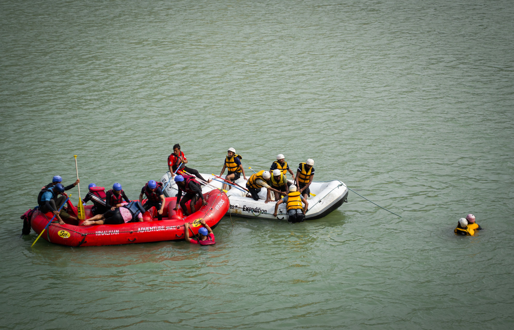

Primeiro Mergulho
Nível: Iniciante
Perfeito para quem está descobrindo o mundo do rafting. As corredeiras do Amanhecer oferecem trechos calmos e suaves, ideais para famílias e grupos sem experiência anterior. O passeio começa ao amanhecer, com a névoa cobrindo o rio, criando uma atmosfera única e inesquecível.
- Duração: 2 horas
- Distância: 6 km
- Grupo: 4 a 8 pessoas
- Equipamentos: balsa, colete, capacete e remo incluídos
R$ 120 por pessoa